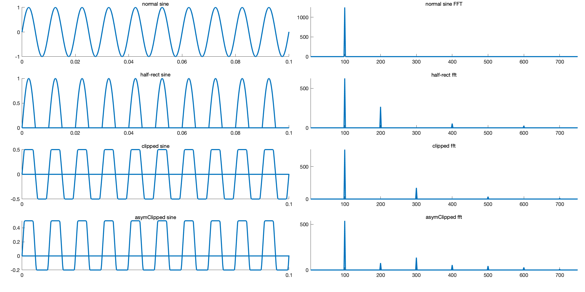

03 February 2019
While designing my electro guitar effects pedal (which will be featured in a future post), I had to deal with a fundamental question: How does the shape of a periodic signal affect its harmonic characteristics? Or, more technically speaking, how does the shape of a periodic signal affects its Fourier Transform? To analyze this on a simplified level, I have decided to use MATLAB.
While I am using MATLAB in this case - mostly because I have access
to an educational license - the same procedure can probably also be done
with python using numpy and/or
scipy. My MATLAB version is MATLAB_R2018b.
Since I hate how MATLAB’s subplot() deals with
whitespace, I have decided to use a user package called Panel
instead. You can download the .zip file and then extract it to somewhere
in your MATLAB path.
I will be analysing four types of sinusoidal waves. The first one will be a pure sine wave with the frequency of 100Hz and amplitude of 2. The second will be the half-wave rectified version of the same wave (so the negative parts will be 0). The third waveform will be a clipped version of the pure sine wave with the clipping occuring at \pm 0.5. The last waveform will be an asymmetrically clipped sine with the clippings at +0.4 and -0.2. The code is as follows:
sampl = 5000;
freq = 100;
p = panel();
p.pack(4,2);
t = 0:1/sampl:0.5-1/sampl;
fSin = sin(2*pi*freq*t);
fSinFFT = fft(fSin);
fHR = halfRecSin(t,freq);
fHRFFT = fft(fHR);
fClip = clipSin(t,freq,0.5);
fClipFFT = fft(fClip);
fAsymClip = asymClipSin(t,freq,0.5,-0.2);
fAsymClipFFT = fft(fAsymClip);
w = (0:length(fAsymClipFFT)-1)*sampl/length(fAsymClipFFT);
% plotting
p(1,1).select();
plot(t,fSin, 'LineWidth',2)
xlim([0, 0.1])
title('normal sine')
p(1,2).select();
plot(w, abs(fSinFFT), 'LineWidth',2)
xlim([5, 750])
title('normal sine FFT')
p(2,1).select();
plot(t,fHR, 'LineWidth',2)
xlim([0, 0.1])
title('half-rect sine')
p(2,2).select();
plot(w,abs(fHRFFT), 'LineWidth',2)
xlim([5, 750])
title('half-rect fft')
p(3,1).select();
plot(t,fClip, 'LineWidth',2)
title('clipped sine')
xlim([0, 0.1])
p(3,2).select();
plot(w,abs(fClipFFT), 'LineWidth',2)
xlim([5, 750])
title('clipped fft')
p(4,1).select();
plot(t,fAsymClip, 'LineWidth',2)
title('asymClipped sine')
xlim([0, 0.1])
p(4,2).select();
plot(w,abs(fAsymClipFFT), 'LineWidth',2)
xlim([5, 750])
title('asymClipped fft')
p.export('t11.png', '-w400', '-h200');
% funcs
function y = halfRecSin(t,freq)
output = zeros(length(t));
for i = 1:length(t)-1
fnc = sin(2*pi*freq*t(i));
if(fnc >= 0)
output(i) = fnc;
else
output(i) = 0;
end
end
y = output;
end
function y = clipSin(t,freq,clip)
output = zeros(length(t));
for i = 1:length(t)-1
fnc = sin(2*pi*freq*t(i));
if(fnc >= clip)
output(i) = clip;
elseif(fnc <= -clip)
output(i) = -clip;
else
output(i) = fnc;
end
end
y = output;
end
function y = asymClipSin(t,freq,clipPlus,clipMinus)
output = zeros(length(t));
for i = 1:length(t)-1
fnc = sin(2*pi*freq*t(i));
if(fnc >= clipPlus)
output(i) = clipPlus;
elseif(fnc <= clipMinus)
output(i) = clipMinus;
else
output(i) = fnc;
end
end
y = output;
endHere are the resulting plots:

We can see that the asymmetrically clipped sine wave has the most number of harmonic components, with peaks at almost all the multiples of 100. This implies that when a sine wave is asymmetrically clipped, it produces more rich and resonant harmonics. In the terms of an electric guitar, it is better to design your transistor and diode clipping to be asymmetric: it will introduce more harmonics.